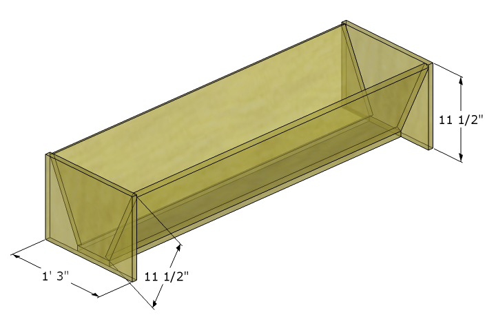
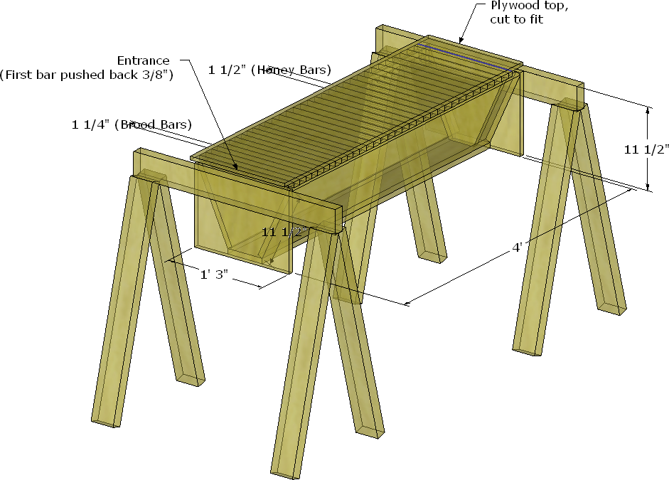

My Apiary
Summary. Compendium of efforts and notes for things to try in my search for better yields in life. Michael Bush's page remains, for me, the BEST reference and inspiration, though I have found local beekeeper clubs to be invaluable for help and advice.
My goals
- organic
- low-effort/time
- 4 Top Bar hives
- 2-4 Lang (traditional) hives
- 1 observation hive
- 300lb wildflower honey per year
- 100lb wax per year
- nucs?
Top Bar Hives
- A simplified way of beekeeping
- design parameters
- Kenyan style
- smaller frames, to avoid breakage
- proper bee space
- simple stand, at easily accesible height
- handles rest on 2 sawhorses
- can handle 2 hives at once
- hang from tree?
Figure 7: Made from basic dimensional lumber, nailed.

Figure 8: Simplicity in design.

Figure 9: With stand.

Feral Bees
- use bait hives with pheremone to catch
- also catches my own swarms
- use nuc, hung from clearly visble tree branch, 10+ ft up, facing south
Observation hive
- clear tubing entrance
- jar feeder
- 3 standard frames
- 3 stacked glass plates for sides
- screened top for ventilation
- frames put in horizontally, after glass plates have been slid up and out
- Can use top bars or frames
Figure 10:

IPM for mites (in order)
- natural cell sizes
- takes 2 generations to regress the size of bees
- foundationless frames with triangular comb guide nailed on
- this leads to comb being built all over the place, for it to work either need frequent checks to encourage correct comb or frames already drawn on either side of empties
- do "shakedowns"
Harvesting
- double-pass filter system in 5-gallon buckets
- cut raw comb from frames and put right into filter bucket
- harvest often
Equipment
Have
- 5 deep boxes with frames and permacell
- 1 KTBH box and frames
- 1 nuc box set out with pheramone as bait hive
- 1 box with bee escapes, for harvesting frames
- 1 hive tool
- razor blades to open baggie feeders
- 2 screened bottom boards
- bee brush
- super smoker
- self-igniting propane torch
- spray bottle loaded with water (sugar syrup always ferments)
- queen muff
- queen catcher hair clip
- frame-grabber / pry bar
- jacket veil and full suit veil
- 2 pair elbow length bee gloves
- migratory style top covers
- helps with winter ventilation
- good for top entrances
- 2 rock pallet platforms for stand/table
- liquid benadryl (for my non-systemic allergic reactions, take with Tylenol)
- silicone candle molds
- crush and strain buckets
- silicone baking pan for melting down wax in
Still need
- another silicone pan for melting wax in, preferably that can pour easier
- Queen marker
- Observation hive
- tape measure for checking cells sizes
- a camera (don't use cell phone! Ack!)
- mite sticky boards
- Lang hive t* TBH conversion frames
- More TBHs and frames (but a sturdier design and simpler stand)
- Black cloth t* cover some frames